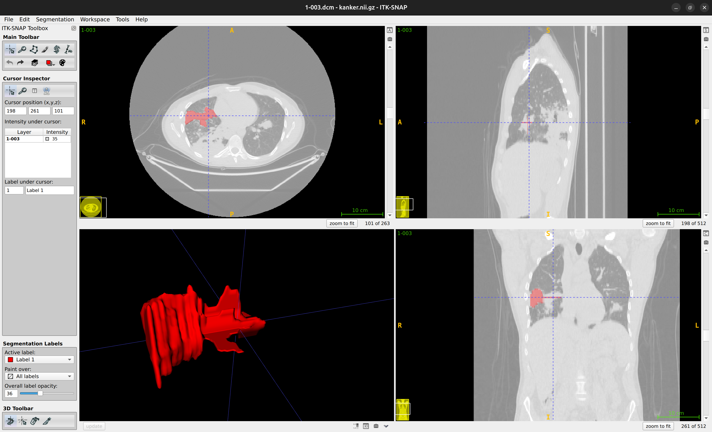
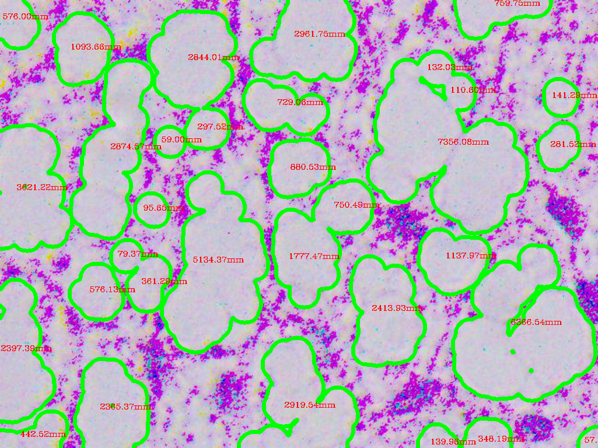
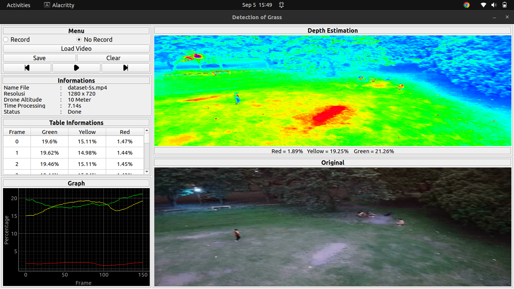
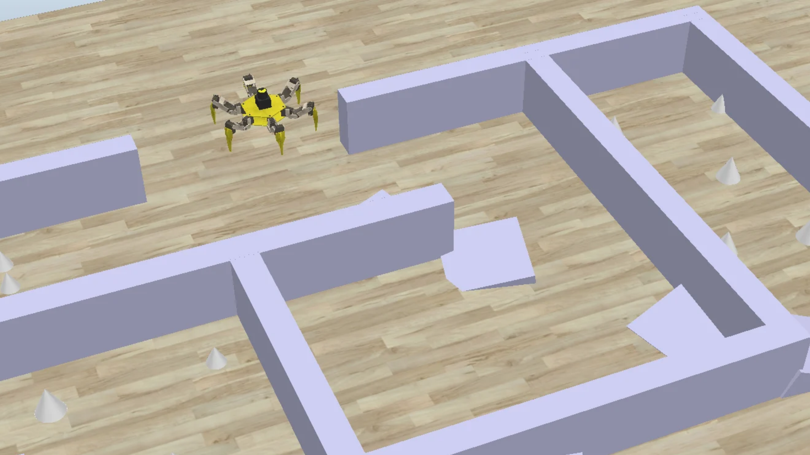

Hello, I'm
Edge AI & Computer Vision Engineer
I build real-time vision systems that run on embedded hardware. My main project is an AI rail-defect inspection system on NVIDIA Jetson for PT KAI, backed by full-stack work (backend, Android, dashboards) and image-processing research. Final-year engineering student at Telkom University.

ITK-SNAP · Active contour · Thresholding
3D volumetric segmentation on lung CT scans using active contour and thresholding methods in ITK-SNAP for accurate tumor extraction.

Watershed · Morphological analysis
Medical image processing utilizing watershed segmentation and morphological analysis to detect, count, and measure fat cell areas automatically.

HSV filtering · Contour analysis
Computer vision algorithm using HSV color filtering and contour analysis to estimate grass depth and vegetation density in real time.

Path planning · Gait navigation · Simulation
Simulation of path planning and dynamic gait navigation for a six-legged robot traversing complex mazes and uneven obstacle terrains.
PT KAI collaboration · Capstone
Telkom University
Bachelor of Engineering · Electrical Engineering · 2023 – Present